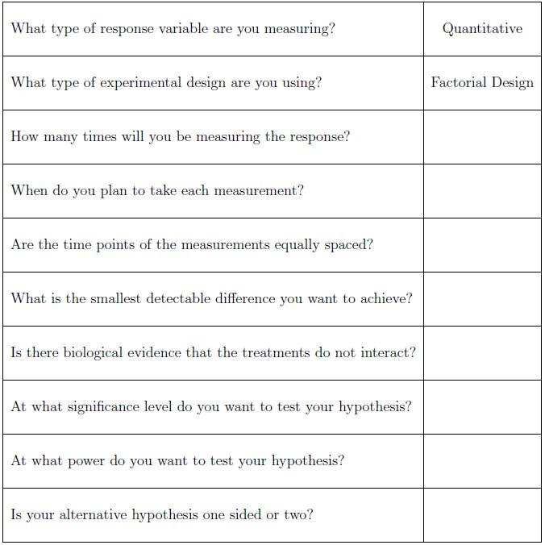

Jill is interested in the growth rate of the tumors. Thus she is planning to measure the tumor size of each mouse several times over the course of the study. This type of experiment is known as a repeated measures experiment. The sample size formula for this type of design is much more complicated than if she were to measure the tumor size only once, hence it is our recommendation that Jill schedule a consultation with a statistician.
Some things that Jill should think about and some information that she will need prior to her consultation are provided in the following checklist.

-- ErinEsp - 13 Mar 2010